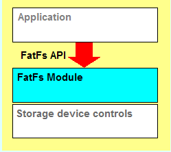
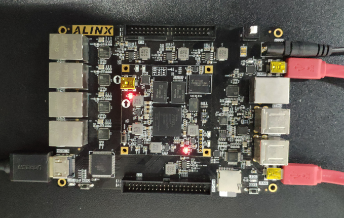

双目摄像头以太网传输#
前面介绍了OV5640摄像头的HDMI显示，但有些场合下，需要把视频传输到上位机，便可以利用以太网进行数据的传输，本章利用LWIP的udp将摄像头数据传输到上位机。
{kind=link}
上位机显示效果
硬件环境搭建#
整体框图如下
本实验是基于OV5640摄像头采集显示二的例程。由于本实验不需要HDMI显示，需要把HDMI显示相关模块删除，v_tc模块，dynclk模块，vid模块，osd模块，hdmi_rst复位，hdmi_i2c，axi_vdma_0
{kind=link}

将Concat修改成两输入，interconnect修改成两个slave，将vdma修改名字
{kind=link}
将两个cmos i2c连接如下
{kind=link}
Vdma与之前不同之处在于，将Frame Buffers设置成了3，也就是可以三帧缓存，通过应用程序来控制。
{kind=link}
删除掉多余的HDMI引脚，最终连接如下
{kind=link}
Vitis程序开发#
程序设计比以前复杂些，主要分为i2c控制，主控制模块display_demo.c；lwip控制模块lwip_app.c；ov5640模块ov5640.c；vdma模块vdma.c；中断模块zynq_interrupt.c。整个程序主要分为两大部分，一是图像的控制，另一个是以太网数据的传输。
{kind=link}
新建工程之后，需要进入BSP设置

使能LWIP函数库，点击OK

图像控制部分#
OV5640模块和VDMA模块前面都已经接触过，在本实验中添加了VDMA的中断，中断控制器在zynq_interrupt.c中初始化
{kind=link}
在display_demo.c的main函数中，进行三帧缓存的初始化，DISPLAY_NUM_FRAMES宏定义设置为3，初始始化pFrame0和pFrame1指针，pFrame0指向摄像头1的缓存，pFrame1指向摄像头2的缓存，并将缓存数据清零。
{kind=link}
接下来是初始化中断，cmos复位，初始化i2c，配置sensor，复位图像，设置为1280*720
{kind=link}
在resetVideoFmt函数中，停止vdma，关闭中断，根据w,h,ch的值重新配置sensor的分辨率

并初始化vdma写通道，将pFrame的三个缓存地址写入S2MM StartAddresses寄存器。利用xAxiVdma_SetCallBack函数设置回调函数，WriteCallBack和WriteErrorCallBack

WriteCallBack回调函数功能为判断中断状态是否是FrameCount中断，如果是，将wr_index加1，并利用XAxiVdma_StartParking设置park pointer寄存器的WrFrmPtrRef，修改当前缓存的Start Addresses，参数为wr_index[0] ; 这里有一个很重要的变量WriteOneFrameEnd，初始值为-1，可以简单理解为一帧写结束，此信号用于图像处理与LWIP之间的交互，稍后会在LWIP处理部分讲到。
{kind=link}
LWIP 控制部分#
下面介绍LWIP部分内容，与上位机通信时，采用UDP传输，在UDP数据包中自定义了协议，如下所示：
一、获取板卡信息
（1）询问命令（共5字节，由上位机通过以太网发送）
字节数 |
1 |
4 |
|---|---|---|
命令信息 |
Header |
0x00020001 |
（2）应答命令（共16字节，由开发板通过以太网发送）
字节数 |
命令信息 |
|---|---|
1 |
Header|0x01 |
4 |
0x00020001 |
6 |
板卡MAC地址 |
4 |
板卡IP地址 |
1 |
0x02 |
二、获取数据
（1）控制命令（由上位机发送数据请求）
字节数 |
命令信息 |
|---|---|
1 |
Header |
4 |
0x00020002 |
6 |
板卡MAC地址 |
1 |
摄像头通道选择，数值1代表仅打开摄像 头1，数值2代表仅打开摄像头2，数值3代表同时打开两个摄像头 |
1 |
启动信号，0表示关闭上位图像显示，其他表示打开图像显示 |
（2）应答命令（由开发板发送）
字节数 |
命令信息 |
|---|---|
1 |
Header|0x 01 |
3 |
0x 000200 |
1 |
通道标识，数值2代表摄像头1，数值3代表摄像头2 |
3 |
序列号，以太网包序号，用于上位机识别 |
N |
图像数据 |
每个UDP包都包含有Header，在第一个字节，其格式如下：
比特位 |
值（0） |
值（1） |
|---|---|---|
bit 0 |
查询或控制 |
应答 |
bit1~bit7 |
随机数据 |
注：当应答时，高7位随机数据保持不变，bit0设置为1
工作流程为：
上位机发送询问命令
开发板应答询问
上位机发送控制命令请求数据
开发板发送数据
步骤3和4循环
LWIP控制部分主要是与图像缓存的交互部分lwip_app.c，在理解程序之前，首先需要了解几个结构体，netif, udp_pcb, pbuf。
在Lwip中，很多结构体都是以链表形式存在的。
每个网络接口都有一个对应的结构体netif表示，是协议栈与底层驱动接口模块。在结构体中定义了链表中下一个结构体，IP地址，子网掩码，网关，输入函数，输出函数，最大传输单元等。对应文件为netif.h和netif.c
{kind=link}
pbuf结构体用于存储接收或发送的数据，也是链表形式。
pbuf *next指向下个pbuf的地址；payload指向有效载荷数据的地址，以udp举例，是除去帧头，IP header, udp header的有效数据；tot_len是当前数据加上后面所有链表pbuf数据之和，如果后面没有链表了，tot_len等于len；len指当前pbuf的数据长度；type指pbuf类型，分为PBUF_RAM, PBUF_ROM, PBUF_REF和PBUF_POOL；
相关文件为pbuf.h和pbuf.c

udp_pcb指udp的协议控制块，主要成员包括，下个pcb，本地端口号，对端端口号，接收回调函数等，相关文件为udp.h和udp.c

对以上结构体有些概念后，下面介绍程序部分的使用。首先需要进行lwip的设置，BSP右键打开Board Support Package Settings
打开后点击lwip213，api_mode设置为RAW API，dhcp_options打开dhcp功能，pbuf_options选项将pbuf_pool_size设置大一些，增大缓存空间，提高效率。点击OK
{kind=link}

接下来进行lwip的初始化，在lwip_app.c文件中，lwip_loop函数进行初始化工作，echo_netif为定义的netif结构体类型的指针，首先设置好板卡的MAC地址，IP地址，子网掩码，网关信息，利用xemac_add函数添加到netif结构中，并利用netif_set_default将echo_netif设置为默认网卡。利用netif_set_up打开此网口。
{kind=link}
进行DHCP的设置

至此，基本上设置完毕。
之后开始调用udp的应用函数，此函数声明定义在 echo.c文件中，
{kind=link}
在此函数中，首先利用udp_new创建一个pcb结构体，返回类型为udp_pcb的指针，并赋值给udp8080_pcb; 利用udp_bind函数绑定地址和端口给结构体，共有三个参数，第一个是pcb结构体变量，第二个是IP地址，每三个是端口号。通常情况下IP地址填入IP_ADDR_ANY。利用udp_recv函数绑定回调函数，本实验中绑定的回调函数为udp_receive
{kind=link}
以上是udp的初始化过程。
udp接收为udp_receive函数，前面已经设置为udp接收的回调函数，功能为接收的上位机udp命令，并判断是否是自定义的协议。如果是询问命令，启动应答。如果是控制命令，根据命令重新设置摄像头分辨率。
{kind=link}
在udp_receive函数中调用了transfer_data函数，作用是发送udp数据。参数pData指向将要发送数据的地址，len为发送数据的长度。

首先判断len是否大于udp8080_qlen，如果是，则利用pbuf_alloc重新分配空间给pbuf udp8080_q，pbuf_alloc的参数为枚举类型，大家可以利用F3了解有哪些枚举成员。之后将数据拷贝到udp8080_q的payload，并给len和tot_len赋值。利用udp_sendto启动发送数据。
命令的接收及发送部分已经讲完，下面来了解如何发送图像数据。在echo.c中利用sendpic发送图像，与transfer_data函数操作类似，但由于图像数据每包数据有可能不同，因此每次都会释放pbuf，而且加入了图像的头targetPicHeader。
{kind=link}
回到lwip_app.c文件，仍然是lwip_loop函数，此处有个while循环，利用xemacif_input启动数据的接收，在这里用到了与图像的交互变量WriteOneFrameEnd，如果接收到图像并且sendchannel[0]有效，开始分包，调用sendpic发送图像。下面的if为判断第二个摄像头是否有效。至此，完成了图像数据的发送。
{kind=link}
板上验证#
在进行验证之前，首先要确保双目摄像头的HDMI显示没有问题，否则无法进行此实验。
连接开发板如下，插入PS端网口，需要保证PC的网卡是千兆网卡，否则会因为网络速度过低，导致无法显示图像。
{kind=link}
AX7015硬件连接图
{kind=link}
AX7021硬件连接图（J16扩展口）
{kind=link}
AX7020/AX7010硬件连接图（J10扩展口）
{kind=link}
AX7Z035/AX7Z100硬件连接图
{kind=link}
AX7Z020/AX7Z010硬件连接图（扩展口J20）
如果有DHCP服务器，会自动分配IP给开发板；如果没有DHCP服务器，默认开发板IP地址为192.168.1.11，需要将PC的IP地址设为同一网段，如下图所示。同时要确保网络里没有192.168.1.11的IP地址，否则会造成IP冲突，导致无法显示图像。可以在板子未上电前在CMD里输入ping 192.168.1.11查看是否能ping通，如果ping通，说明网络中有此IP地址，就无法验证。
没有问题之后打开putty软件。

Run Configurations配置如下：
{kind=link}
串口打印信息如下，检测出网卡速度，设置的IP地址
{kind=link}
打开Vivado工程文件夹，打开videoshow.exe
{kind=link}
软件扫描到两个摄像头，可通过勾选来选择相应的摄像头显示，点击播放
{kind=link}
显示效果如下，如果想重新选择显示通路，在软件屏幕上双击，回到选择界面，再次选择要显示的图像。
{kind=link}
打开任务管理器，可以看到网络带宽为720Mbps左右
{kind=link}
本章小结#
在本实验中，介绍了利用lwip的udp传输视频，内容较多，在此抛砖引玉，想熟练运用lwip并非一朝一夕之事，仍需大家深入研究内部结构，灵活运用。